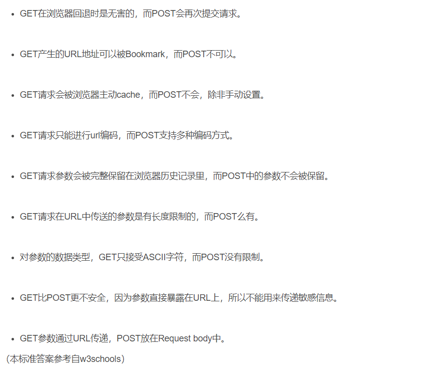

1.对Web标准以及W3c的理解
①:因为浏览器之间的差异,解析出来的效果可能不一致，所以通过制定Web标准来使
各个浏览器之间展示统一的内容
②:Web标准不是某一个标准,而是由W3C和其他标准化组织制定的一系列标准的集合
主要包括 结构(Structure),表现(Presentation)和行为(Behavior)三方面
③:结构标准:结构用于对网页元素进行整理和分类，主要包括XML和XHTML两个部分
④:样式标准:表现用于设置网页元素的排版，颜色，大小等外观样式，主要指的是CSS
⑤:行为标准:行为是指网页模型的定义以及交互的编写，主要包括DOM和ECMAScript两个部分
2.对浏览器内核的理解
①:主要分为渲染引擎和js引擎
②:渲染引擎：主要负责取得网页的（html，xml，图片等），整理信息结合css渲染页面
计算网页的显示方式，浏览器内核的不同对网页的语法解释也会有所不同，
所以渲染效果也会有所不同，这也是我们需要做兼容性处理的原因。
③:js引擎：解析和执行js来达到网页的动态交互效果。
最开始渲染引擎和js引擎没有太区分，后来越来越独立化，然后内核一般就是指渲染引擎了
3.浏览器之间的差异
①:决定浏览器之间差异的首先是浏览器的内核(渲染引擎)，比如速度,资源占用、安全性；
其次是浏览器外壳的扩展功能，比如插件、广告拦截、个人需要。
★:市场上常见的内核基本是以下4种
①Trident:
Trident内核就是我们所熟知的IE浏览器的内核，该内核在IE4中首次采用，沿用到IE11，俗称“IE内核”
★注：很多国产浏览器都是双内核浏览器Trident,Webkit 比如遨游浏览器，360安全浏览器
②Gecko:
Gecko内核是Firefox(火狐浏览器)采用的内核，
开始于Netscape6。Gecko的特点是代码完全公开，可开发程度很高
多以有时候也会被称为Firefox内核，Gecko内核也是一个跨平台的内核
★注：Netscape6(网景浏览器)
③Presto:
Presto是一个由Opera Software开发的浏览器内核，（商业引擎）
Presto的特点是渲染速度的优化达到了极致，但代价是牺牲了网页的兼容性
④Webkit:
Webkit内核是苹果公司自己的内核，也是苹果Safari浏览器使用的内核。
★Webkit引擎包含WebCore排版引擎和JavascriptCore解析引擎，
均从KDE的KHTML引擎衍生而来，基于GPL开源。Google Chrome使用了Webkit内核，
在脚本解析上Chrome使用了自家研发的V8引擎。
★注：KDE开发的内核，速度快捷，容错率低； 常见的khtml内核的浏览器有：konqueror
★拓展:
①Blink是一个由Google和Opera Software开发的浏览器排版引擎
该渲染引擎是开源引擎Webkit中Webcore组件的一个分支
②KHTML是HTML网页排版引擎之一，由KDE所开发
基于KHTML内核的内核：WebKit、WebCore。
总结：
①IE: trident 内核
②Firefox ： gecko 内核
③Safari:webkit 内核
④Opera: 以前是 presto 内核， Opera 现已改用 Google Chrome 的 Blink 内核
⑤Chrome:Blink( 基于 webkit ， Google 与 Opera Software 共同开发 )
4.Doctype作用
①:DOCTYPE标签是一种标准通用标记语言的文档类型声明，它的目的是要告诉标准通用标记语言解析器
它应该使用什么样的文档类型定义（DTD）来解析文档
该标签可声明三种 DTD 类型，分别表示严格版本、过渡版本以及基于框架的HTML 文档。位于文档最前面
5.严格模式与混杂模式如何区分
①严格模式：
:所谓的标准模式是指，浏览器按 W3C 标准解析执行代码
②混杂模式：
:怪异模式是一种向后兼容的解析方法，说的透明点就是可以实现IE5.5以下版本浏览器的渲染模式。
则是使用浏览器自己的方式解析执行代码，因为不同浏览器解析执行的方式不一样，所以我们称之为怪异模式。
★拓展
★W3C标准推出前，旧的页面都是根据旧的渲染方式对页面进行渲染的，
因此在W3C标准推出后为了保证旧页面的正常显示，保持浏览器的兼容性
这样浏览器上就产生了能够兼容W3C标准渲染的严格模式和保证旧页面显示的怪异模式的标准兼容模式。
★严格模式和混杂模式的区别最明显的在于 css中的盒模型的解析
6.HTML,XML,XHTML
★HTML(HyperTextMarkupLanguage):超文本标记语言，是语法较为松散的，不严谨的Web语言
是最早写网页的语言，但由于时间早，规范不是很好，大小写混写且编码不规范 HTML基于SGML
★XML:可扩展性标记语言，主要用于存储数据和结构，可扩展
XML 是一种元语言(meta language)，所谓元语言是指为创造其他语言提供了语法机制，
同时不会通过预定义的语法限制表达式的一种语言。XML定义在SGML文档类型语言中。 XML也基于SGML
★XHTML:可扩展超文本标记语言，基于XML，作用于HTML类似，但语法更严格
是一种跨平台语言，编码更自由，可以自由创建标签
xhtml即是升级版的html，对html进行了规范，编码更加严谨纯洁，也是一种过渡语言，html向xml过渡的语言
XHTML 是基于XML的 HTML
★注：SGML是指“标准通用标记语言(Standard Generalized Markup Language)
1986年出版发布的一个[信息管理]方面的国际标准
它是国际上定义电子文件结构和内容描述的标准，
SGML规定了在文档中嵌入描述标记的标准格式，指定了描述文档结构的标准方法
★注：所有HTML文档和XML文档都是SGML文档，所有XHTML文档都是XML文档也都是HTML文档
7.TCP/IP参考模型
8.TCP/IP参考模型对应的协议

9.TCP/IP协议
①TCP/IP：传输控制协议/IRI特网协议(TCP/IP)组是由美国国防部所创建，主要用来确保数据的完整性及在
毁灭性战争中维持通信
②是由一组不同功能的协议组合在一起构成的协议簇
③TCP/IP是当今数据网络的基础
④由于TCP/IP协议簇主要由TCP协议和IP协议组成，所以简称为TCP/IP协议,
⑤TCP/IP簇代表的是一个协议栈，里面包含很多的协议
★注：TCP是一种面向连接的保证可靠传输的协议。通过TCP/IP协议传输，得到的是一个顺序误差错的数据流
★使用TCP的应用
1.Web浏览器;2.电子邮件;3.文件传输程序
10.网络层协议提供点到点的服务（互联网中路由器之间的转发) IP协议
①IP协议的核心任务：路由选择，用于决定将数据报发送目标机器所经过的路径。
11.TCP/IP(连接建立)三次握手
一句话概括：客户端和服务器端都需要直到各自可收发，因此需要三次握手
★注：任何一个基于TCP的应用，在应用开始传输数据之前都需要建立一个TCP的会话，基于这个会话开始传输
1.seq(序列号);2.ack(确认号);3.Control bits(控制位)
12.HTTP
①HTTP:超文本传输协议(HyperText Transfer Protocol)是互联网上最为广泛应用的一种网络协议
所有的WWW文件都必须遵守这个标准。
HTTP协议是基于TCP/IP协议之上的协议，是Web浏览器和Web服务器之间的传输协议
它可以使浏览器更加高效，使网络传输减少。
★注：WWW的工作是基于客户机/服务器计算模型
WWW由Web浏览器和Web服务器构成，两者之间采用超文本传输协议HTTP进行通信
拓展：
★1.浏览器和服务器是通过什么来连接的
客户端(浏览器) --->(Http协议的编程)--->服务器端
★2.这种连接方式是怎么实现的
:通过Internet去发送到服务器当中，而Internet内部可以通过三种方式来实现发送信息和数据
①第一种：HTTP协议，工作中最常用的，是建立在TCP/IP基础上实现的
②第二种：FTP协议
③第三种：TCP/IP协议，这是最底层的协议，其他的方式必须是要通过它，但是要是想这种协议
必须要实现Socket编程，这种方法是用来上传一些比较大的问价，视频，进行断点续传的操作
★HTTP协议实例剖析
①第一步：使用浏览器通过HTTP协议输入网址
②第二步：网址通过DNS(域名系统)解析到指定的Web服务器端上，假如服务器的地址是221.104.13.32:80
从浏览器到服务器端口它使用到最底层的TCP/IP协议
③第三步：实现TCP/IP协议用Socket来完成，使用了Socket的套接字
④第四步：服务器端的80接口监听到之后服务器以三种方式把内容数据返回给客户端(HTML),(XML),(JSON)，这样客户端和服务器端就连接上了
★优选视频
★HTTP
13.HTTP和HTTPS的区别
★http:传输的数据都是未加密的，也就是明文的，网景公司设置了SSL协议来对http协议传输的数据进行加密处理，
★https:以安全为目标的HTTP通道，简单讲是HTTP的安全版，
即HTTP下加入SSL层，HTTPS的安全基础是SSL，因此加密的详细内容就需要SSL，(https的SSL加密是在传输层实现的！important)
比http协议的安全性更高。 主要的区别如下：
①Https协议需要ca证书，费用较高。
②http是超文本传输协议，信息是明文传输，https则是具有安全性的ssl加密传输协议
③使用不同的链接方式，端口也不同，一般而言，http协议的端口为80，https的端口为443
④http的连接很简单，是无状态的；HTTPS协议是由SSL+HTTP协议构建的可进行加密传输、身
份认证的网络协议，比http协议安全。
★注：SSL(安全套接层)视为网络通信提供安全及数据完整性的一种安全协议
★注：TLS(传输层安全协议)在互联网上提供保密安全信道的加密协议，为诸如网站、电子邮件、网上传真等等数据传输进行保密
14.https协议的工作原理
客户端在使用HTTPS方式与Web服务器通信时有以下几个步骤
1.客户端使用https的URl访问Web服务器，要求与Web服务器建立连接
2.Web服务器收到客户端请求后，会将网站的证书信息(证书中包含公钥)传送一份给客户端
3.客户端和web服务器端开始协商SSL链接的安全等级，也就是加密等级。
4.客户端浏览器通过双方协商一致的安全等级，建立会话密钥，然后通过网站的公钥来加密会话密钥，并传送给网站。
5.Web服务器利用自己的私钥解密出会话密钥。
6.Web服务器利用会话密钥加密与客户端之间的通信。
15.HTTPS协议的优点
①使用HTTPS协议可认证用户和服务器，确保数据发送到正确的客户机和服务器；
②HTTPS协议是由SSL+HTTP协议构建的可进行加密传输、身份认证的网络协议，要比http协议安全，
可防止数据在传输过程中不被窃取、改变，确保数据的完整性。
③HTTPS是现行架构下最安全的解决方案，虽然不是绝对安全，但它大幅增加了中间人攻击的成本。
④谷歌曾在2014年8月份调整搜索引擎算法，并称“比起同等HTTP网站，采用HTTPS加密的网站在搜索结果中的排名将会更高”。
16.HTTPS协议的缺点
①https握手阶段比较费时，会使页面加载时间延长50%，增加10%~20%的耗电。
②https缓存不如http高效，会增加数据开销。
③SSL证书也需要钱，功能越强大的证书费用越高
④SSL证书需要绑定IP，不能再同一个ip上绑定多个域名，ipv4资源支持不了这种消耗。
17.HTTP请求方式
①GET:请求指定的页面信息，并返回实体主体
②POST:向指定资源提交数据进行处理请求（例如提交表单或者上传文件）。数据被包含在请求体中
POST请求可能会导致新的资源的建立和/或已有资源的修改。
③HEAD:类似于get请求，只不过返回的响应中没有具体的内容，用于获取报头
④OPTIONS:允许客户端查看服务器的性能。
⑤DELETE:请求服务器删除指定的页面。
⑥PUT:从客户端向服务器传送的数据取代指定的文档的内容。
⑦TRACE:回显服务器收到的请求，主要用于测试或诊断。
⑧CONNECT:HTTP/1.1协议中预留给能够将连接改为管道方式的代理服务器。
18.GET和POST两种基本请求方式的区别
HTTP请求数据包括三个部分：请求行+请求头+数据体
有关于此问题网上的"标准答案"大致分为两大部分，一部分是说原有的百度搜索的答案都是不规范的，有待商榷(使用上的区别)
另一部分是就get和post本身而言的区别进行分析
使用上的区别：

GET和POST本质上的差别:
GET产生一个TCP数据包；POST产生两个TCP数据包。
对于GET方式的请求，浏览器会把http header和data一并发送出去，服务器响应200（返回数据）
而对于POST，浏览器先发送header，服务器响应100 continue，浏览器再发送data，服务器响应200 ok（返回数据）
主要参考：
19.HTTP常见状态码
常见HTTp状态码
200-请求成功
301-资源(页面等)被永久转移到其他URL
400-请求无效
401-当前请求需要用户验证，请求需要用户授权。
403-服务器已经得到请求但是拒绝执行
404-请求的网页(资源等)不存在
500-内部服务器错误
503-服务器当前不能处理客户端的请求，一段时间后可能恢复正常
更多状态码
20.HTTP状态码分类
HTTP状态码由三个十进制数字组成，第一个十进制数字定义了状态码的类型，后两个数字没有分类的作用。HTTP状态码共分为5种类型
1.1 消息1xx（Informational 1xx）该类状态代码用于表示临时回应。
1.2 成功2xx（Successful 2xx） 表示客户端请求被成功接收、理解、接受。
1.3 重定向3xx（Redirection 3xx）该类状态码表示用户代理要想完成请求，还需要发出进一步的操作。
1.4 客户端错误--请求有语法错误或请求无法实现
1.5 服务器端错误--服务器未能实现合法的请求
Data:2018 . 9 / 20